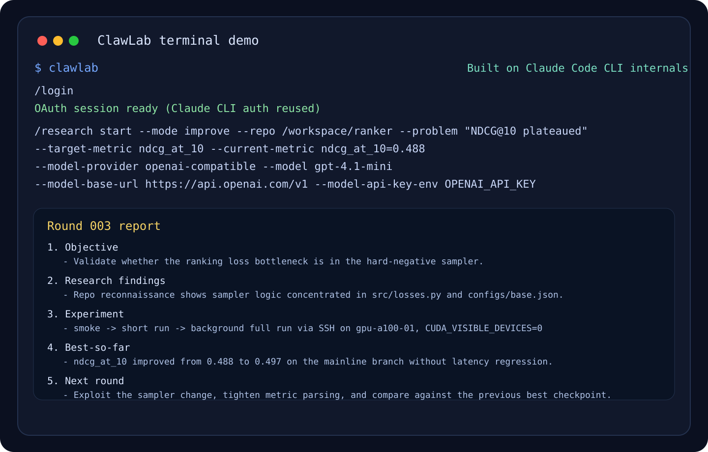

57
Built-in skills

Autonomous Research Loop
ClawLab runs a continuous research loop from mission framing to evidence-backed reporting, with multi-agent team roles, durable memory, and local or SSH/GPU execution.
Built-in skills
Core modes
Team roles
Execution backends (Local + SSH)
Use New, Improve, Paper, and Rebuttal modes to drive consistent outcomes end to end.
Conductor + specialists collaborate across team-plan, team-prd, team-exec, team-verify, team-fix.
Shared artifacts and decision logs persist in .clawlab for resumable and auditable research sessions.
Patch, validate, run, debug, and report with local and remote SSH/GPU execution targets.
Start from a topic and build a research direction from scratch.
/research start --mode new "topic"
Improve an existing repository around a concrete bottleneck.
/research start --mode improve --repo /path --problem "..."
Generate structured paper drafts only when explicitly requested.
/research summarize paper [sessionId]
Map reviewer concerns to evidence and produce point-by-point responses.
/research team switch reviewer
Bootstrap a fresh research topic from scratch with mission framing and early evidence loops.
Target bottlenecks, run patch-validate cycles, and iterate toward measurable metric gains.
bun install
bun src/entrypoints/cli.tsx
# inside CLI
/research setup
/research team init
/research start --mode new "adaptive planning for browser agents"